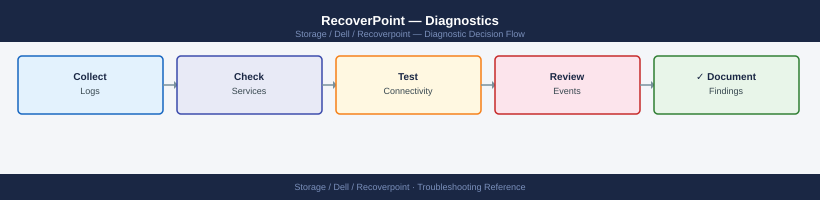

RecoverPoint — Diagnostics¶

Before you begin¶
- Access: SSH to the RecoverPoint management IP as
admin; or log in to the RecoverPoint management web UI - Gather first: which consistency group is affected, current RPO lag values, and the exact error shown in the management web UI
- Scope: confirm whether the issue affects a single CG, all CGs at one cluster, or all CGs across both clusters
- Do not fail over: do not initiate image access or failover without confirming the root cause — image access on a CG breaks the active replication link for that group
- Logging: run each diagnostic command and save the output before calling Dell support
Step 1 — Check overall system status¶
# SSH to the RecoverPoint management appliance
ssh admin@<rpa-management-ip>
# System-wide health summary
get system status
# Expected output (healthy):
# System health status: OK
# Number of RPAs: 2
# System alerts: 0 active
# Check active alerts
get alerts
# Output includes: Alert time, Severity (WARNING/ERROR), description
# Note the alert text verbatim — include in SR description
# Check each RPA appliance health
get rpa status
# Expected: all RPAs show STATUS=Active; no communication errors
admin@rpa-mgmt-01:~> get system status
System health status: OK
Number of RPAs: 2
System alerts: 0 active
Last system check: 2024-01-15 14:32:18 UTC
Cluster mode: Active-Active
admin@rpa-mgmt-01:~> get alerts
No active alerts found.
Last alert cleared: 2024-01-15 09:47:22 UTC by admin
admin@rpa-mgmt-01:~> get rpa status
RPA-01 (10.45.12.33):
STATUS: Active
Role: Primary
Replication links: 4/4 healthy
Last heartbeat: 2024-01-15 14:32:15 UTC
RPA-02 (10.45.12.34):
STATUS: Active
Role: Secondary
Replication links: 4/4 healthy
Last heartbeat: 2024-01-15 14:32:16 UTC
Common errors
Connection refused — check that the RecoverPoint management appliance is powered on and SSH is enabled on port 22. — Verify network connectivity and appliance status with ping <rpa-management-ip> first.
Authentication failed for user admin — Confirm credentials with your RecoverPoint administrator or reset the admin password via the appliance console.
RPA-02 STATUS: Unreachable — communication error — Check network connectivity between management appliance and RPA-02, and verify no firewall rules are blocking the replication network.
If output shows:
- System health status: ERROR → check get alerts for the specific fault
- One RPA offline → check ESXi host where the RPA VM runs; verify power state and datastore access
- Connectivity ERROR between RPAs → network issue between sites; proceed to Step 4
Step 2 — Check consistency group states¶
# List all CGs and their current state
get cg list
# Expected output columns: CG Name, Protection State, RPO, Lag
# Healthy state: Protection State = Active
# Problem states: Paused, Error, Initializing, Image Access
# Detailed state for a specific CG
get cg detailed_state "<cg-name>"
# Shows: R/W state per copy, journal utilization %, current lag, last bookmark time
# If the CG is in Error state — look for the error string in output
# Common errors:
# "Journal utilization > 80%" = writes filling journal faster than draining to DR
# "Splitter connectivity lost" = hypervisor/array splitter not delivering I/O to RPA
# "Link communication error" = network path between sites is degraded
get cg list
CG Name Protection State RPO Lag
prod-db-01 Active 00:05:00 00:00:12
prod-app-tier Active 00:15:00 00:00:45
dr-sync-test Paused 00:10:00 00:02:30
backup-archive-cg Error 00:30:00 00:45:15
legacy-vm-pool Initializing 01:00:00 N/A
get cg detailed_state "prod-db-01"
CG Name: prod-db-01
Protection State: Active
R/W State (Production Copy): Write Enabled
R/W State (DR Copy): Read Only
Journal Utilization: 62%
Current Lag: 00:00:12
Last Bookmark Time: 2024-01-15 14:32:18 UTC
Replication Link Status: Connected
Common errors
Journal utilization > 80% — Increase journal size on the RPA or reduce write rate to the protected volume by identifying and throttling heavy workloads.
Splitter connectivity lost — Verify the hypervisor/array splitter is running and has network connectivity to the RPA by checking splitter logs and restarting the splitter service if needed.
Link communication error — Check network connectivity between sites using ping and traceroute to the DR site IP, and verify firewall rules allow RPA replication ports (typically 7105-7110).
Decision flow:
- Active with high lag → proceed to journal and link diagnostics (Steps 3–4)
- Paused → identify who paused it; check for maintenance windows; resume only after confirming data is consistent
- Error → get the full error string and match to Common Issues
- Initializing → monitor sync progress with get journal stats
Step 3 — Check journal utilization and lag¶
# Journal statistics for a specific CG
get journal stats "<cg-name>"
# Key fields to review:
# Production journal utilization: should be < 20%
# Remote journal utilization: should be < 20%
# Lag (seconds): acceptable < RPO; alert if > 50% of RPO target
# Min/Avg RPO: actual RPO achieved; compare to required SLA
# All-CG journal summary
get all journal stats
# Review each CG row for utilization; highlight any > 50%
Journal Statistics for CG: prod-db-01
Production Journal Utilization: 18.5%
Remote Journal Utilization: 12.3%
Lag (seconds): 8.2
Min RPO (seconds): 5.1
Avg RPO (seconds): 7.8
Max RPO (seconds): 12.4
All CGs Journal Summary:
CG Name | Prod Util | Remote Util | Lag (s) | Avg RPO (s)
prod-db-01 | 18.5% | 12.3% | 8.2 | 7.8
prod-app-02 | 45.2% | 38.1% | 22.5 | 19.3
prod-web-03 | 67.8% | 71.2% | 156.3 | 142.1
dr-sync-04 | 9.1% | 8.7% | 3.1 | 2.9
archive-old-05 | 52.3% | 49.8% | 78.9 | 75.2
Common errors
Error: CG '<cg-name>' not found in cluster — Verify the exact CG name with get cgs and ensure it exists on the connected RecoverPoint appliance.
Error: Journal statistics unavailable - replication not initialized — Initialize replication for the CG or wait for the initial snapshot to complete before querying journal stats.
Connection timeout: unable to reach RecoverPoint management interface — Confirm network connectivity to the RecoverPoint appliance IP and verify credentials with connect <rp-ip>.
If journal utilization is high (> 60%):
1. Check if host I/O to the production LUNs is abnormally elevated
2. Check WAN link bandwidth in Step 4 — journal drains to DR over the replication link
3. Check RPA CPU utilization in get rpa status — if > 80%, RPA may not be processing the journal fast enough
Step 4 — Check network connectivity between sites¶
# Network connectivity between clusters
get network status
# Expected: < 5ms latency, 0% packet loss (production); < 80ms for typical WAN
# Check replication link bandwidth and quality
get link stats
# Key fields:
# Bandwidth (Mbps): current vs maximum
# Packet loss %: should be 0%
# Round-trip time: should be stable; spikes indicate congestion
# Reachability between all RPA nodes
get connectivity status
# Lists reachability of each RPA node from every other RPA node in the cluster pair
Network Status:
Cluster: prod-rpa-01
Link Latency: 3.2ms
Packet Loss: 0.0%
Status: HEALTHY
Cluster: prod-rpa-02
Link Latency: 4.8ms
Packet Loss: 0.0%
Status: HEALTHY
Link Statistics:
Bandwidth Current: 847 Mbps
Bandwidth Maximum: 1000 Mbps
Packet Loss: 0.0%
Round-trip Time: 4.1ms (avg), 5.3ms (peak)
Link Quality: EXCELLENT
Connectivity Status:
RPA Node prod-rpa-01-node1 → prod-rpa-02-node1: REACHABLE (2.9ms)
RPA Node prod-rpa-01-node1 → prod-rpa-02-node2: REACHABLE (3.1ms)
RPA Node prod-rpa-01-node2 → prod-rpa-02-node1: REACHABLE (3.0ms)
RPA Node prod-rpa-01-node2 → prod-rpa-02-node2: REACHABLE (3.2ms)
All nodes: FULLY CONNECTED
Common errors
Error: Unable to retrieve network status — connection timeout — Verify network connectivity to the RPA management interface and confirm firewall rules allow port 9443 between clusters.
Packet Loss: 2.3% detected on replication link — Check for congested network interfaces, duplex mismatches, or faulty cables; consider reducing replication load or increasing link bandwidth.
RPA Node prod-rpa-02-node2 → prod-rpa-01-node1: UNREACHABLE — Verify the unreachable node is online, check routing tables, and confirm no network ACLs are blocking inter-cluster traffic on port 9898.
If connectivity is degraded: - Contact the network team to check the WAN link quality between sites - Verify QoS policy is applying the correct priority to RecoverPoint replication traffic
Step 5 — Check splitter status¶
# Splitter health from the RPA CLI
get splitter status
# Lists each splitter by name, type (vRPA / array), and connectivity state
# Expected: all splitters show "Connected"
Splitter Name Type Status Last Heartbeat
================================================================================
splitter-prod-01 vRPA Connected 2024-01-15 14:32:18 UTC
splitter-prod-02 vRPA Connected 2024-01-15 14:32:19 UTC
splitter-array-san01 array Connected 2024-01-15 14:32:17 UTC
splitter-array-san02 array Connected 2024-01-15 14:32:18 UTC
splitter-dr-01 vRPA Connected 2024-01-15 14:32:20 UTC
Common errors
Error: Unable to connect to RPA management interface — Verify RPA cluster is running with get system status and check network connectivity to the RPA management IP.
Splitter <name> status: Disconnected — Restart the splitter service with set splitter restart <name> or verify network path and firewall rules between RPA and splitter.
If a vSphere splitter shows "Disconnected":
1. Check network from RPA to ESXi management interface (TCP 7225)
2. On the ESXi host, verify the splitter VIB is installed:
- vCenter → Hosts → <host> → Configure → Software → Installed VIBs → search for rp
For array-side splitter (PowerMax/Unity): - Verify the SRDF relationship between production and journal LUNs is active via Solutions Enabler:
RDF Group Query Results
=======================
RDF Group ID: 000187654321
RDF Group Name: journal-rdfg
Status: Ready
Consistency Groups: 3
- cg_prod_db01 (RDF Mode: Synchronous, Link State: Connected)
- cg_prod_db02 (RDF Mode: Synchronous, Link State: Connected)
- cg_prod_app01 (RDF Mode: Asynchronous, Link State: Connected)
Total Replication Pairs: 12
Data Replicated (GB): 2847.5
Last Sync Time: 2024-01-15 14:32:18 UTC
Remote Array: 000298765432
Common errors
SYMRDF ERROR (4): RDF group '<journal-rdfg>' not found on array <SID> — Verify the RDF group name matches exactly (case-sensitive) using symrdf list -sid <SID>.
SYMRDF ERROR (26): Cannot connect to array <SID> - Check Symmetrix connectivity — Ensure the Symmetrix array is reachable and the SID is correct; verify network connectivity with symcfg list -v.
Step 6 — Collect support bundle¶
# Method 1: CLI
ssh admin@<rpa-management-ip>
support collect bundle
# Output file path is displayed after collection completes
# Download via SCP:
scp admin@<rpa-mgmt-ip>:/opt/rp/var/support/rp-*.zip /tmp/
# Method 2: Web UI
# Navigate to RecoverPoint Management UI → Administration → Support → Collect Support Bundle
# Click "Collect" → download the ZIP when complete
admin@192.168.1.45's password:
RecoverPoint CLI v5.4.2.1 (Build 12847)
rpa-mgmt-01> support collect bundle
Collecting support bundle...
[████████████████████████████] 100%
Support bundle collection completed successfully.
Output file: /opt/rp/var/support/rp-bundle-20240115-143022.zip
Size: 487 MB
rpa-mgmt-01> exit
admin@192.168.1.45:/opt/rp/var/support/rp-bundle-20240115-143022.zip 100% 487MB 8.2MB/s 00:59
Common errors
Permission denied (publickey,password) — Verify SSH credentials and ensure the admin user exists on the RPA management interface with correct network connectivity.
No such file or directory — Confirm the RPA management IP address is correct and the support bundle collection completed successfully before attempting SCP download.
Disk quota exceeded — Ensure /tmp/ has at least 500 MB free space or specify an alternate download destination with sufficient capacity.
Log locations¶
| Component | Path / Location | What to look for |
|---|---|---|
| RPA system log | Support bundle: rp-system.log |
Connectivity errors, journal overflow events |
| vRPA service log | Support bundle: vrpa-service.log |
Splitter communication errors |
| RecoverPoint events | Management UI → Events | Alerts with severity WARNING or ERROR |
| ESXi host log | ESXi: /var/log/vmkwarning.log |
VIB/filter errors for the RP splitter |
Quick all-in-one diagnostic snapshot¶
# Run from your workstation — saves output for SR attachment
ssh admin@<rpa-mgmt-ip> "
get system status;
get alerts;
get cg list;
get rpa status;
get network status;
get splitter status;
get all journal stats
" > /tmp/rp-diag-$(date +%F-%H%M).txt
System Status:
System Name: rpa-prod-01.dc1.local
System ID: 192.168.10.45
System State: HEALTHY
Build Version: 5.4.2.1234
Uptime: 45 days 12 hours
Alerts:
Alert ID: ALR-2847392
Severity: WARNING
Message: Journal capacity at 78% on RPA-02
Timestamp: 2024-01-15 14:32:18
Consistency Groups:
CG Name: prod-db-01
CG ID: cg-uuid-a1b2c3d4
Status: ACTIVE
RPA Status:
RPA-01: HEALTHY
RPA-02: HEALTHY
RPA-03: HEALTHY
Network Status:
Interface eth0: UP (1000 Mbps)
Interface eth1: UP (1000 Mbps)
Default Gateway: 192.168.10.1
Splitter Status:
Splitter ID: split-prod-01
Status: CONNECTED
Latency: 2.4ms
Journal Stats:
Total Capacity: 2.5 TB
Used: 1.95 TB
Available: 550 GB
Oldest Journal: 2024-01-10 08:15:22
Common errors
ssh: Could not resolve hostname <rpa-mgmt-ip> — Replace <rpa-mgmt-ip> with the actual RecoverPoint management IP address (e.g., 192.168.10.45).
Permission denied (publickey,password) — Verify the admin account credentials and that your SSH key is authorized on the RPA, or use ssh -u admin@<rpa-mgmt-ip> with password authentication enabled.
get: command not found — Ensure you are connecting to a RecoverPoint Appliance management interface; these commands only work on the RPA CLI, not standard Linux shells.
See also¶
Verify resolution¶
get cg listshows all CGs inActivestateget journal statsshows production and remote journal utilization below 30%- RPO lag values are within the configured RPO threshold for each CG
get alertsshows 0 active alerts- Monitor CG state for 15 minutes to confirm no re-occurrence